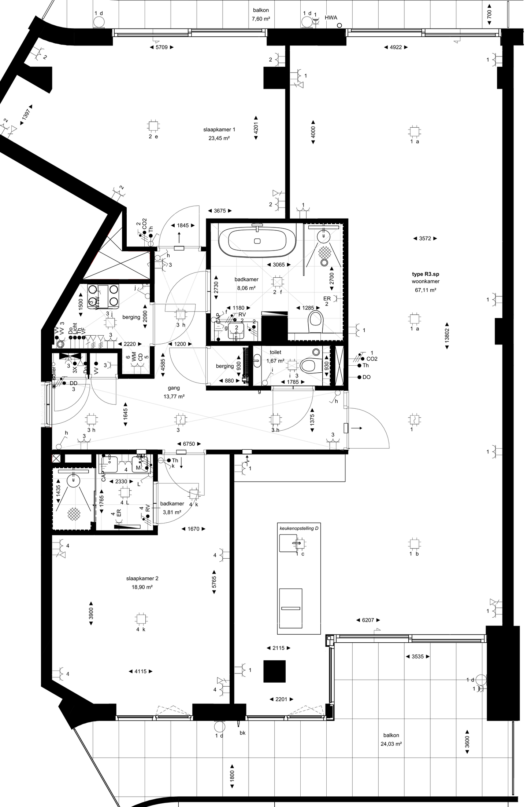
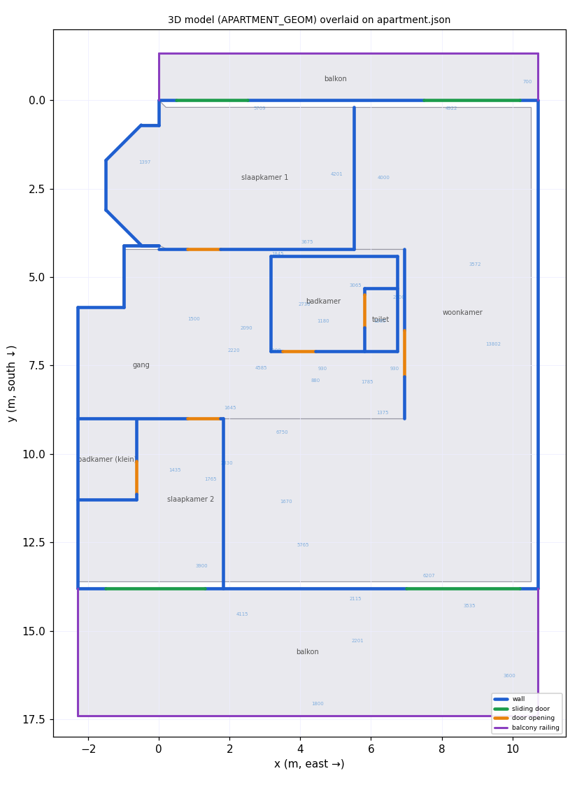

1 · Original PDF (ground truth)

2 · Rendered from apartment.json
Black: outer envelope (incl. NW zigzag). Coloured fills: room polygons. Blue numbers: every raw mm callout from the JSON (placed at the position read from the PDF). Red dot: world origin (0, 0) at the NW corner of the top facade. Grid is 1 m × 1 m.
3 · 3D model overlay (APARTMENT_GEOM vs JSON)

Grey fills: apartment.json room polygons. Solid blue: 3D model solid walls.
Orange: door openings. Green: sliding doors. Purple: balcony railings.
Generated by tools/plan-overlay.py. If a blue wall drifts off a grey
room edge, the model and the plan disagree there.